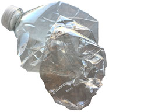
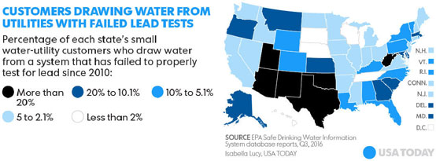

Water Facts: North Texas
Health Benefits and Risks
We all hear our doctors say we need to drink more water, but we probably rarely stop to think why water is so important. Water has so many benefits to supporting our bodies, such as circulation, respiration, digestion and energy. It's essentially the body's most important nutrient next to oxygen. Water protects the spinal cord, cushions our joints, provides essential minerals and nutrients, and flushes out waste from the kidneys, intestines and liver. Another reason to grab another glass of water is that research reveals the greater water intake, the lower the incidence of bladder cancer, Research also suggests that staying hydrated can reduce the risk of colon and breast cancer. While water can be a life saver, unclean water can actually be a huge risk. Read further about the risks of ingesting of lead. And simply grabbing a bottle of water vs. tap isn't always the answer. And neither is boiling it … this process does not remove lead.
Bottled water little-known facts
We've all seen bottled water sales soar over the past couple of decades. We're quick to grab a bottle despite the cost being 1000 times our tap. Here's some little-known facts about bottled water:
- Tap water actually fills ~25% of bottled water
- Plastic bottles contain chemicals that can seep into the water if exposed to heat or sit around for a long time
- Bottled water can contain phthalates, mold, microbes, benzene, trihalomethanes and even arsenic, according to studies
- If water is packaged/sold in the same state, the FDA doesn't regulate the water … this means roughly 60% to 70% percent of bottled water and jugs are free of FDA regulation
- The FDA doesn't require bottled water to be safer than tap
EPA requirements
Babies and children are especially at risk when it comes to water safety. Even if water is in compliance with EPA regulations, that doesn't mean a safe level of cleanliness for our youngsters. Lead concentrations in the 3.8 to 15 ppb range put a formula-fed baby at risk of elevated blood lead levels. It's important to also understand that city testing of water doesn't reflect what's in your own home. Corrosion of household plumbing systems can add contaminants in your home. A person's possible exposure to lead overall is 20%+ from drinking water alone, based on EPA estimates.
Why clean water is important
Over 2,100 known toxins may be present in drinking water, increasing risk for illness. Many people complain about the taste and smell of tap water, which can be impacted by erosion of natural deposits or the water disinfection process, among others. Even low exposure of lead is harmful to young children, infants, and fetuses. Studies reveal that lead exposure have been linked to damage to the central and peripheral nervous system, learning disabilities, impaired hearing, and impaired formation and function of blood cells. You might wonder where this lead is coming from … it's as simple as materials and components associated with services lines and home plumbing.
What's in North Texas water
In its latest report, the Dallas Water Utilities "Water Quality Data Report" lists the following contaminants in its water. Sources of these contaminants vary but include water additives, run-off from fertilizer, erosion of natural deposits, the water disinfection process, discharge from petroleum refineries, decay of man-made deposits, corrosion of household plumbing systems and discharge from chemical factories. So what are some of these contaminants? As we learned, bottled water has less oversight than our tap water, yet we grab a bottle quicker than resorting to filtration systems. Here's just a snapshot of what most of us unknowingly consume from our tap:
Softening vs. filtering
Water softeners do not filter out all contaminants, that's what in-home filtration systems do... this is especially true when it comes to lead, iron and sulfur. While softer water might feel good on the skin, it still contains foreign matter that shouldn't be ingested.
Water filtration, not to be confused with water softening, measures the amount of carbon in the tank, resin in the tank and the time the water spends with the contaminants.
Sources:
- https://wonderopolis.org/wonder/how-much-water-do-you-need-to-survive/
- https://www.everydayhealth.com/water-health/water-body-health.aspx
- https://greatist.com/health/health-benefits-water
- https://www.mindbodygreen.com/0-11193/7-reasons-to-never-drink-bottled-water-again.html
- https://www.rd.com/health/diet-weight-loss/rethink-what-you-drink/
- https://www.ewg.org/tapwater/what-about-lead.php?pws=TX0430007#.WlFTvyPMyIF
- http://heartofwellness.org/health-benefits-of-filtered-water/
- https://www.epa.gov/ground-water-and-drinking-water/basic-information-about-lead-drinking-water#health
- https://www.nrdc.org/stories/truth-about-tap
- http://dallascityhall.com/departments/waterutilities/DCH%20Documents/pdf/WQR2016_eng.pdf
- http://www.water-rightgroup.com/blog/myths-about-water-softeners-8-things-people-get-wrong/
- http://hppr.org/post/millions-americans-risk-lead-exposure-drinking-water